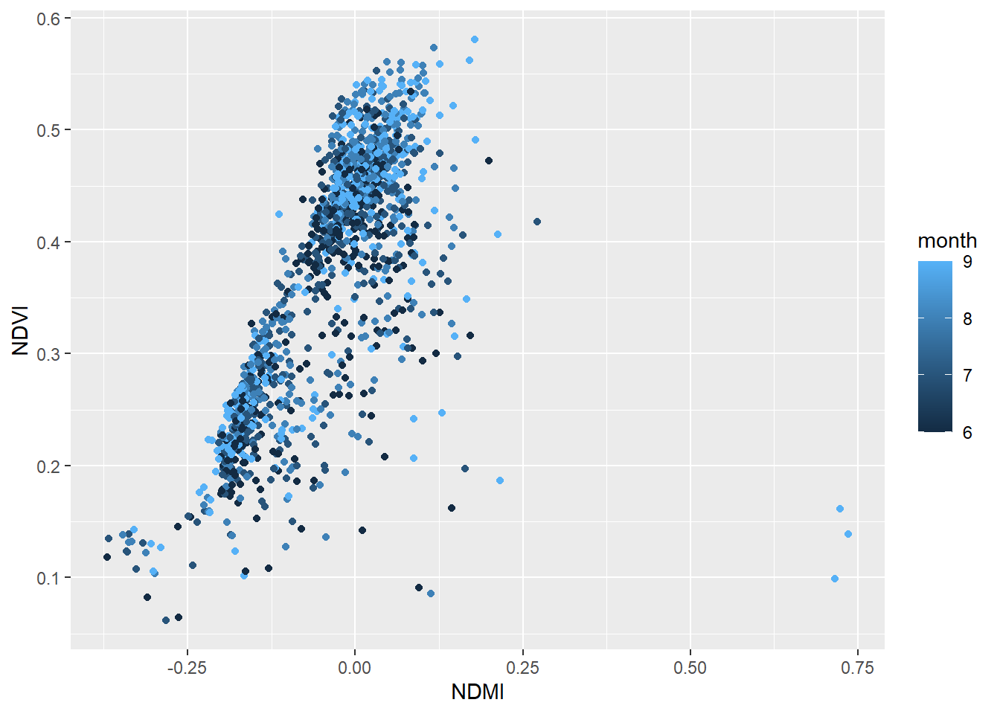
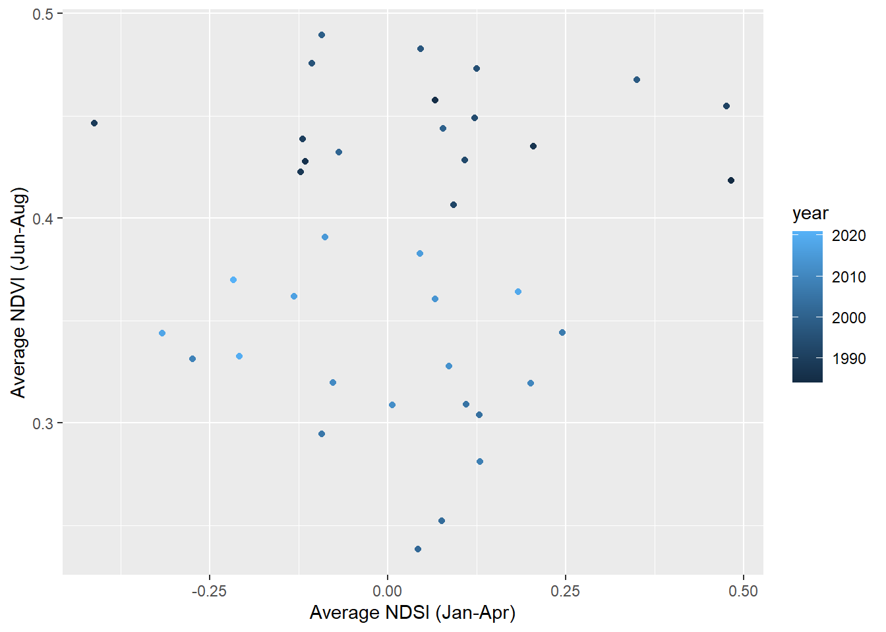
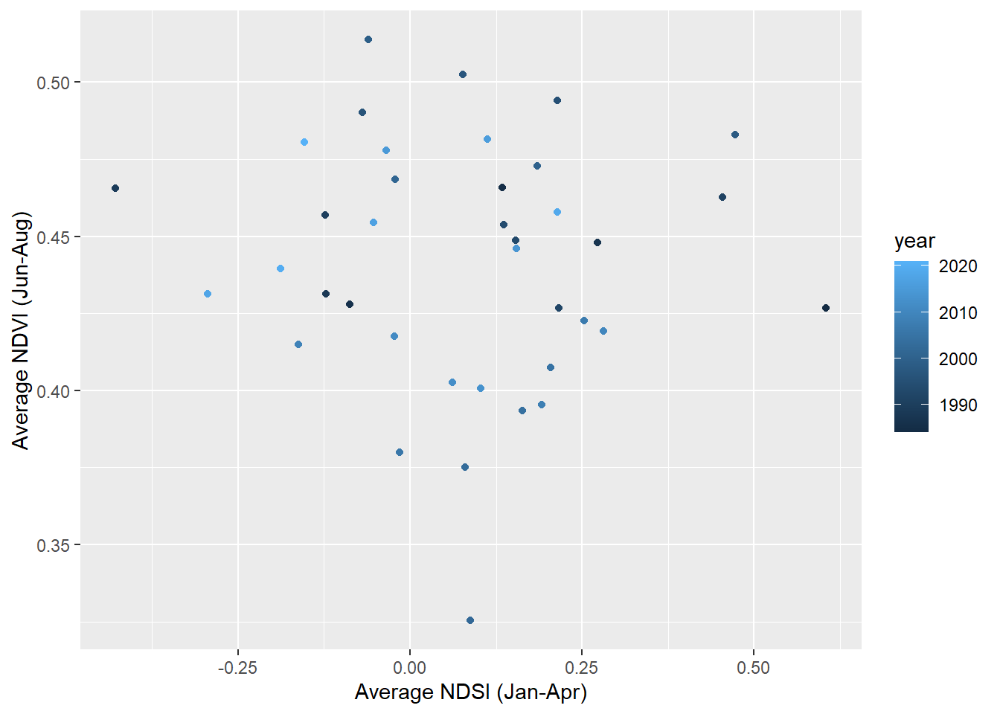
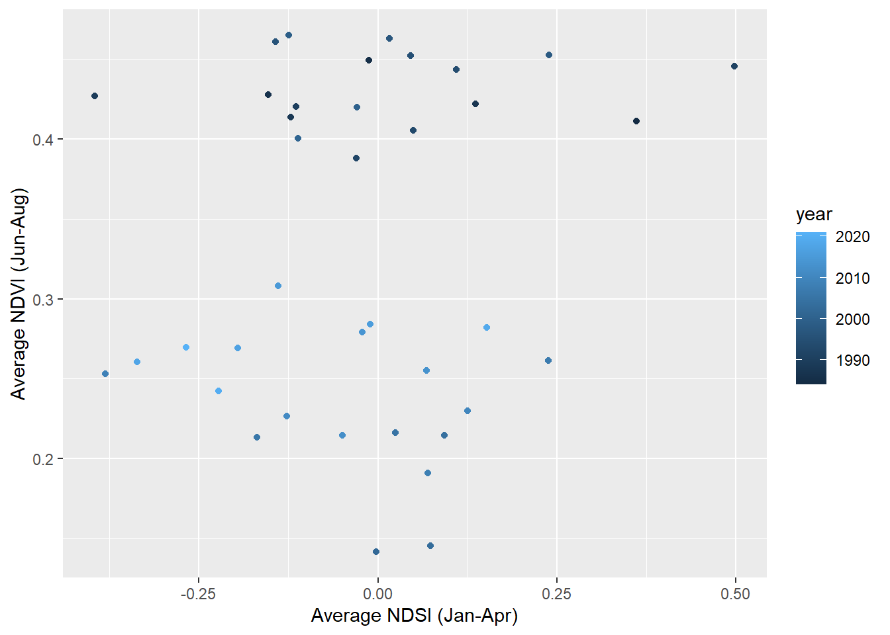

Chapter 2 Fire Wrangle
library(tidyverse)
library(tidyr)
library(ggthemes)
library(lubridate)Case Study: Hayman Fire
Reading in Selected Datasets:
#Reading in files
files_updated <- list.files('Data/Chapter_2/Updated',full.names=T)
#Read in individual data files
ndmi_updated <- read_csv(files_updated[1]) %>%
rename(burned=2,unburned=3) %>%
mutate(DateTime=as.Date(DateTime, format = "%m/%d/%Y"), data='ndmi')
ndsi_updated <- read_csv(files_updated[2]) %>%
rename(burned=2,unburned=3) %>%
mutate(DateTime=as.Date(DateTime, format = "%m/%d/%Y"), data='ndsi')
ndvi_updated <- read_csv(files_updated[3])%>%
rename(burned=2,unburned=3) %>%
mutate(DateTime=as.Date(DateTime, format = "%m/%d/%Y"), data='ndvi')
# Stack as a tidy dataset
full_long_updated <- rbind(ndvi_updated,ndmi_updated,ndsi_updated) %>%
gather(key='site',value='value',-data,-DateTime) %>%
filter(!is.na(value))2.1 Correlation between NDVI and NDMI, using a wide dataset. Data is between 1984-2019, and focuses on summer months (Jun-Sept):
#using pivot_wider to create a wide dataset.
full_wide_updated <- full_long_updated %>%
pivot_wider(id_cols= NULL, names_from = "data", values_from = "value") %>%
mutate(month=month(DateTime),
year=year(DateTime)) %>%
filter(month %in% c(6,7,8,9))Plotting the Correlation between NDVI and NDMI:
ggplot(data=full_wide_updated,aes(x=ndmi,y=ndvi, color=month)) +
geom_point() +
xlab('NDMI') +
ylab ('NDVI')
There is a strong positive linear correlation between NDMI and NDVI.
2.2 Correlation between average NDSI (normalized snow index) for January - April and average NDVI for June-August. Does the previous year’s snow cover influence vegetation growth for the following summer?
Creating a clean data set containing relevant averages:
#mutating by month
full_wide_full_updated <- spread(full_long_updated,data,value) %>%
mutate(month=month(DateTime),
year=year(DateTime)) %>%
group_by(site,year)#summarizing mean values for summer
full_wide_average_summer_updated <- full_wide_full_updated %>%
filter(month %in% c(6,7,8))%>%
group_by(year) %>%
summarize(mean_NDVI_summer = mean(ndvi,na.rm=TRUE))#summarizing mean values for spring
full_wide_average_spring_updated <- full_wide_full_updated %>%
filter(month %in% c(1,2,3,4))%>%
group_by(year) %>%
summarize(mean_NDSI_spring = mean(ndsi,na.rm=TRUE))#joining the mean datasets
full_wide_average_updated <- inner_join(full_wide_average_spring_updated,full_wide_average_summer_updated)Plotting the Correlation between average summer NDVI and average spring NDSI:
#plotting datasets
ggplot(data=full_wide_average_updated,aes(x=mean_NDSI_spring,y=mean_NDVI_summer, color=year)) +
geom_point() +
xlab('Average NDSI (Jan-Apr)') +
ylab ('Average NDVI (Jun-Aug)')
There is little correlation between average spring NDSI and average summer NDVI; if generous, there might be a weak positive correlation. Overall, the most notable pattern is that, for roughly the same range of NDSI, the average summer NDVI is, generally, lower in the 2010s compared to the 1990s.
2.3 How is the snow effect from question 2 different between pre- and post-burn and burned and unburned?
Filter by Burned/Unburned:
#filter by unburned
full_wide_unburned_updated <- full_wide_full_updated %>%
filter(site %in% c('unburned'))
#filter by burned
full_wide_burned_updated <- full_wide_full_updated %>%
filter(site %in% c('burned'))Filter and Graph Unburned average summer NDVI and average spring NDSI:
#filtering by summer
full_wide_unburned_average_summer_updated <- full_wide_unburned_updated %>%
filter(month %in% c(6,7,8))%>%
group_by(year) %>%
summarize(mean_NDVI_summer = mean(ndvi,na.rm=TRUE))#filtering by spring
full_wide_unburned_average_spring_updated <- full_wide_unburned_updated %>%
filter(month %in% c(1,2,3,4))%>%
group_by(year) %>%
summarize(mean_NDSI_spring = mean(ndsi,na.rm=TRUE))#joining dataset
full_wide_average_unburned_updated <- inner_join(full_wide_unburned_average_spring_updated,full_wide_unburned_average_summer_updated)#graphing dataset
ggplot(data=full_wide_average_unburned_updated,aes(x=mean_NDSI_spring,y=mean_NDVI_summer, color=year)) +
geom_point() +
xlab('Average NDSI (Jan-Apr)') +
ylab ('Average NDVI (Jun-Aug)')
The unburned graph supports the identical conclusion as problem 2; there is little (at most, weak positive) correlation between Average Spring NDSI and Average Summer NDVI.
Filter and Graph Burned average summer NDVI and average spring NDSI:
#filter by summer
full_wide_burned_average_summer_updated <- full_wide_burned_updated %>%
filter(month %in% c(6,7,8))%>%
group_by(year) %>%
summarize(mean_NDVI_summer = mean(ndvi,na.rm=TRUE))#filter by spring
full_wide_burned_average_spring_updated <- full_wide_burned_updated %>%
filter(month %in% c(1,2,3,4))%>%
group_by(year) %>%
summarize(mean_NDSI_spring = mean(ndsi,na.rm=TRUE))#join datasets
full_wide_average_burned_updated <- inner_join(full_wide_burned_average_summer_updated,full_wide_burned_average_spring_updated)#graph datasets
ggplot(data=full_wide_average_burned_updated,aes(x=mean_NDSI_spring,y=mean_NDVI_summer, color=year)) +
geom_point() +
xlab('Average NDSI (Jan-Apr)') +
ylab ('Average NDVI (Jun-Aug)')
In the 1980s and 1990s, the burned areas had exclusively high NDVI regardless of of NDSI, while the 2000s and 2010s had comparatively low NDVI regardless of NDSI.
For the following questions:
#filter per month
full_wide_jan_updated <- full_wide_full_updated %>%
filter(month %in% c(1)) %>%
group_by(month) %>%
select(-DateTime,-site,-year)
full_wide_feb_updated <- full_wide_full_updated %>%
filter(month %in% c(2)) %>%
group_by(month) %>%
select(-DateTime,-site,-year)
full_wide_mar_updated <- full_wide_full_updated %>%
filter(month %in% c(3)) %>%
group_by(month) %>%
select(-DateTime,-site,-year)
full_wide_apr_updated <- full_wide_full_updated %>%
filter(month %in% c(4)) %>%
group_by(month) %>%
select(-DateTime,-site,-year)
full_wide_may_updated <- full_wide_full_updated %>%
filter(month %in% c(5)) %>%
group_by(month) %>%
select(-DateTime,-site,-year)
full_wide_jun_updated <- full_wide_full_updated %>%
filter(month %in% c(6)) %>%
group_by(month) %>%
select(-DateTime,-site,-year)
full_wide_jul_updated <- full_wide_full_updated %>%
filter(month %in% c(7)) %>%
select(-DateTime) %>%
group_by(year,ndvi,ndmi,ndsi)
full_wide_aug_updated <- full_wide_full_updated %>%
filter(month %in% c(8)) %>%
group_by(month) %>%
select(-DateTime,-site,-year)
full_wide_sept_updated <- full_wide_full_updated %>%
filter(month %in% c(9)) %>%
group_by(month) %>%
select(-DateTime,-site,-year)
full_wide_oct_updated <- full_wide_full_updated %>%
filter(month %in% c(10)) %>%
group_by(month) %>%
select(-DateTime,-site,-year)
full_wide_nov_updated <- full_wide_full_updated %>%
filter(month %in% c(11)) %>%
group_by(month) %>%
select(-DateTime,-site,-year)
full_wide_dec_updated <- full_wide_full_updated %>%
filter(month %in% c(12)) %>%
group_by(month) %>%
select(-DateTime,-site,-year)2.3.1 What month is the greenest month on average?
Calculate Averages for NDVI:
#calculate averages per month
jan_NDVI_updated <- mean(full_wide_jan_updated$ndvi,na.rm=TRUE)
feb_NDVI_updated <- mean(full_wide_feb_updated$ndvi,na.rm=TRUE)
mar_NDVI_updated <- mean(full_wide_mar_updated$ndvi,na.rm=TRUE)
apr_NDVI_updated <- mean(full_wide_apr_updated$ndvi,na.rm=TRUE)
may_NDVI_updated <- mean(full_wide_may_updated$ndvi,na.rm=TRUE)
jun_NDVI_updated <- mean(full_wide_jun_updated$ndvi,na.rm=TRUE)
jul_NDVI_updated <- mean(full_wide_jul_updated$ndvi,na.rm=TRUE)
aug_NDVI_updated <- mean(full_wide_aug_updated$ndvi,na.rm=TRUE)
sept_NDVI_updated <- mean(full_wide_sept_updated$ndvi,na.rm=TRUE)
oct_NDVI_updated <- mean(full_wide_oct_updated$ndvi,na.rm=TRUE)
nov_NDVI_updated <- mean(full_wide_nov_updated$ndvi,na.rm=TRUE)
dec_NDVI_updated <- mean(full_wide_dec_updated$ndvi,na.rm=TRUE)Organize in Table:
#bind to a single table
green_NVDI_updated <- rbind.data.frame(jan_NDVI_updated,feb_NDVI_updated,mar_NDVI_updated,apr_NDVI_updated,may_NDVI_updated,jun_NDVI_updated,jul_NDVI_updated,aug_NDVI_updated,sept_NDVI_updated,oct_NDVI_updated,nov_NDVI_updated,dec_NDVI_updated)
greenest_month_updated <- max(green_NVDI_updated)NDVI stands for ‘Normalized Difference Vegetation Index’, where the highest NDVI will indicate the greenest month on average. The greenest month is August, with an average NDVI of 0.385766.
2.3.2 What month is the snowiest on average?
Calculate Averages for NDVI:
#calculate averages per month
jan_NDSI_updated <- mean(full_wide_jan_updated$ndsi,na.rm=TRUE)
feb_NDSI_updated <- mean(full_wide_feb_updated$ndsi,na.rm=TRUE)
mar_NDSI_updated <- mean(full_wide_mar_updated$ndsi,na.rm=TRUE)
apr_NDSI_updated <- mean(full_wide_apr_updated$ndsi,na.rm=TRUE)
may_NDSI_updated <- mean(full_wide_may_updated$ndsi,na.rm=TRUE)
jun_NDSI_updated <- mean(full_wide_jun_updated$ndsi,na.rm=TRUE)
jul_NDSI_updated <- mean(full_wide_jul_updated$ndsi,na.rm=TRUE)
aug_NDSI_updated <- mean(full_wide_aug_updated$ndsi,na.rm=TRUE)
sept_NDSI_updated <- mean(full_wide_sept_updated$ndsi,na.rm=TRUE)
oct_NDSI_updated <- mean(full_wide_oct_updated$ndsi,na.rm=TRUE)
nov_NDSI_updated <- mean(full_wide_nov_updated$ndsi,na.rm=TRUE)
dec_NDSI_updated <- mean(full_wide_dec_updated$ndsi,na.rm=TRUE)Organize in Table:
#bind to a table
snow_NDSI_updated <- rbind.data.frame(jan_NDSI_updated,feb_NDSI_updated,mar_NDSI_updated,apr_NDSI_updated,may_NDSI_updated,jun_NDSI_updated,jul_NDSI_updated,aug_NDSI_updated,sept_NDSI_updated,oct_NDSI_updated,nov_NDSI_updated,dec_NDSI_updated)
snowiest_month_updated <- max(snow_NDSI_updated)NDSI stands for ‘Normalized Difference Snow Index’, where the highest NDSI will indicate the snowiest month on average. The snowiest month is January, with an average NDSI of 0.1834847.